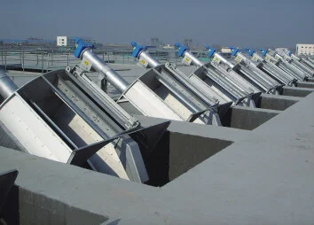
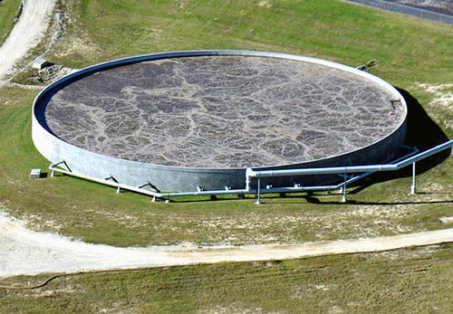
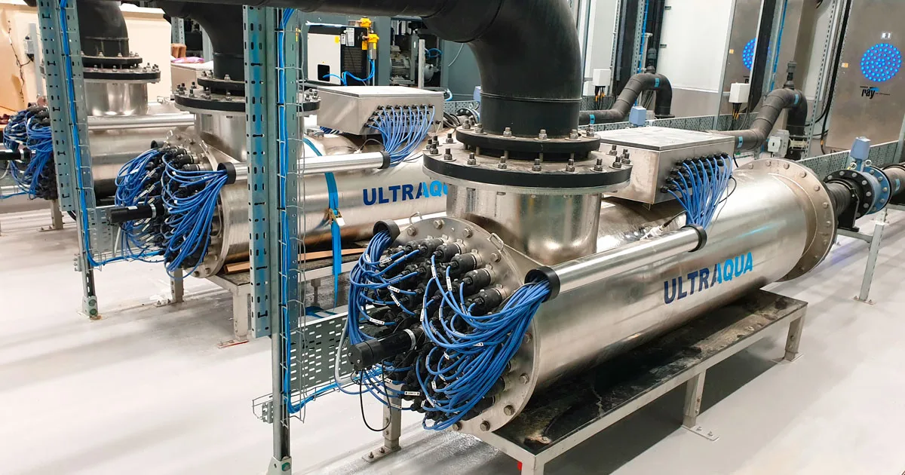

ЗАБРУДНЕННЯ
СТІЧНИХ ВОД.
Класифікація та Вплив Стоків
середня кількість побутових стоків на одну особу в містах.
важких металів на літр стоків металургійних підприємств.
забруднень потрапляє у водойми через дощові води.
рівень кислотності стоків хімічної промисловості.
мікрочастинок пластику вимивається за одне прання.
зношеність магістральних колекторів у великих містах.
Джерела Забруднення
Мийні засоби, гігієна та кухонні відходи.
Важкі метали, кислоти та нафтопродукти.
Прориви колекторів та витоки каналізації.
Залишки ліків та антибіотиків у воді.
Вимивання токсинів зі звалищ електроніки.
Стоки м'ясокомбінатів та молочних заводів.
Етапи Очищення Води
Механічна фільтрація великого сміття.

Біологічне очищення активним мулом.

Хімічне знезараження та скид.

МОНІТОРИНГ СТОКІВ
Автоматизована система моніторингу дозволяє виявити викиди шкідливих речовин у режимі реального часу, запобігаючи екологічним катастрофам.